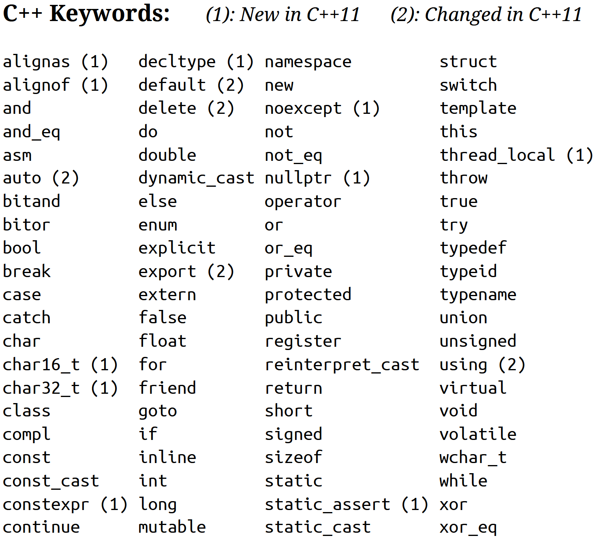

# Section Three
Variables and Special Characters
---
### Special Characters
| Character | Name | Meaning |
| --- | --- | --- |
| // | Double slash | Beginning of a comment |
| # | Pound Sign (Hash) | Beginning of a preprocessor directive |
| < > | Open/Close brackets | Mainly used to enclose an `#include` |
---
### Special Characters
| Character | Name | Meaning |
| --- | --- | --- |
| ( ) | Open/Close parenthesis | Argument passing, function header, etc. |
| { } | Open/Close braces | Encloses a block of code, sets scope |
| " " | Open/Close quotation marks | Enclose a string of characters |
| ; | Semicolon | End of statement |
---
### Comments
* Comments allow us to add non-executing parts to our code to increase readability.
* Two types of comments
* `//` - Line level comments, these comments end at the next newline
* `/* */` - Block level comments, these comments start at the `/*` and end at `*/`
int a; // This is a comment
/* int a; This is all a comment */
---
### Variables
As we have already established, it's pretty hard to remember numbers. So it would be helpful if we had a way of referring to
memory addresses as a descriptive name. Variables allow us to just this.
* *variable* - a named storage location for data within a program
---
### Variables
* *variable declaration* - a statement used to tell the compiler that a new variable should be created; contains the identifier and type for the variable.
int temperature;
char wind;
The *declaration statement* above tells the compiler to create a variable named `temperature` that will store an *integer*.
---
### Literal
* *literal* - a value that is written into a programs code
int temperature = 12;
char wind = 'E';
double time = 12.5;
The *literal*s above are the items to the right of the assignment operator.
---
### Identifiers
* *identifier* - a programmer-defined name for some part of the program: function, variable, etc.
int temperature = 12;
void setTemperature();
The *identifiers* above are `temperature` and `setTemperature`.
---
### Identifier Naming
* Names should represent the purpose of the item being named. Thus, `int temperature` should be an integer variable that holds a temperature.
* The first character of an identifier must be an alphabetic character or an underscore (`_`)
* After the first, you can use alphabetic, numeric, or underscore characters.
* Identifiers **must not be** a keyword.
* Identifiers are case-sensitive. (`temperature` & `Temperature` are different)
---
### Data Types
So, what types of data can we store? The tables below will give a sampling of the major data types you will encounter throughout this class.
| Type Name | Description | Literal Examples |
| --- | --- | --- |
| int | Integer number | 74, -193 |
| double | Floating point number | 3.14, -0.1 |
| char | Single character | 'a', '9' |
---
### Data Types
| Type Name | Description | Literal Examples |
| --- | --- | --- |
| bool | Boolean value | `true`, `false` |
| std::string | String value | "Hello", "beepBoop5"
These are not all of the types you will encounter but are a good look at the main ones.
### Keywords

There are 84 keywords in C++ which consists of all the keywords from the C language, plus new ones related to C++'s object-oriented focus.
### Declaration vs Definition/Initialization
* When we declare a variable we simply set aside a memory location and assign that location a name.
* When we define/initialize a variable we assign that memory location a value.
* An undefined/uninitialized variable will contain a value, however it **will NOT be** what you think it will be.
* Memory is constantly being recycled by the OS and you will get whatever was in that location last. "garbage"
---
### `auto` Keyword
* C++11 added the `auto` keyword which allows a variable declaration to infer its type from the definition of said variable.
auto decimalNumber = 1.52;
auto answerCorrect = true;
* In the examples above `decimalNumber` will be a `double` and `answerCorrect` will be a `boolean`.
* Be aware that an `auto` variable cannot simply be declared it must be defined. Thus, strict typing in C++ is preserved.
---
### Using `auto`
* Defining variables using `auto` should only be used when code readability is increased. Simply using `auto` to define integers isn't appropriate.
* However, compare the following snippet for an example where using auto is beneficial and increases readability.
std::vector<std::string> nameList;
std::vector<std::string>::size_type size = nameList.size();
auto size = nameList.size();
---
### Variable Lifetime
* Declared variables have a "life span" within the context of our code.
* *scope* - the section of a program in which an identifier is defined
* C++ has two sets of rules regarding scope:
* *global scope* - identifiers are known from the point at which they are declared until the end of the program
* *local scope* - identifiers are known from the point at which they are declared until the end of the *block* in which they are declared.
---
### Variable Lifetime
#include <iostream>
const double PI = 3.14; // Example of a global scoped variable.
int main () {
double r = 1.5; // Example of a locally scoped variable.
double area = PI * r * r; // Example of a locally scoped variable.
return 0;
}
---
### Memory Footprint
* Each data type has a different memory footprint size.
* To determine the memory footprint of a data value you can ask C++ by using the `sizeof()` function
std::cout << sizeof(int);
> 4
---
### Integers
* `int` is the primary integer type and can range from ~-2B to ~2B and is 4 bytes
* `long` gives you double the precision but takes 8 bytes
* `unsigned` allows you to gain precision by dropping the negative numbers but still same memory footprint
* `short` halves our memory footprint to 2 bytes
---
### Integer Literals
* Integer literals by default are stored as `int`s
* Integer literals that begin with a `0`(zero) are treated as octal (base 8): `02322` = `1234`
* Integer literals that begin with `0x` are treated as hexidecimal (base 16): `0x4D2` = `1234`
---
### Characters
* The `char` datatype is primarily used to hold a single character
* It may also be used to hold very small positive numbers (up to 255)
* Uses 1 byte of memory
* The numeric value of the character is stored in memory

---
### C-Strings
* C-strings are a holdover from the C language.
* Default behavior of C++ string literals.
* Defined as an array of characters, `char[]`
* When using auto with string literals you will get a C-string.
* We will talk more about these later.
---
### Standard Library Strings
* Must include string library - `#include <string>`
* Must be defined using `std::string` or `using std::string`
* Works differently than C-strings and much easier to work with.
* When writing code in this class it is expected that you will use `std::string` when dealing with string variables.
* Memory footprint depends on the overall size of the string itself.
---
### Floating-point Types
* `double` is the primary floating point type, footprint is 8 bytes
* `float` is a less precise floating point type at 4 bytes
* Floating point numbers are stored in a form similar to scientific notation and aren't entirely *precise*
* When comparing floating point numbers we must use *epsilon comparison*s
* All floating point numbers are signed.
---
### Floating-point Literals
* Can be represented in two ways:
* Fixed point (decimal) notation
* 67.45
* E notation
* 6.745E1
* Literals are `double` by default
---
### Boolean
* Represents values that are `true` or `false`
* 1 byte in memory and is stored as small integers
* `false` is represented by 0, `true` is 1
* When comparing booleans know that **ONLY** the value 0 is considered `false`. **ALL OTHER** values are considered `true`, thus it's unwise to compare `bool` to anything other than `true` and `false`.
---
### Named Constants
* A *type modifier* is a C++ keyword that is used in conjunction with a type name to change that type's properties in some way.
* *Named Constant* - a variable which is modified with the `const` keyword whose content cannot be changed during program execution
* A `const` data type must be defined/initialized when it is declared.
* Named in uppercase letters
const double PI = 3.14;
const int NUM_STATES = 50;